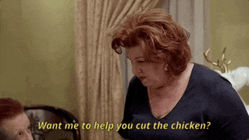

Cool Mom Debby!

As the token cool mom of the block, Debby always has the best snacks, tells the best jokes, and is so relatable.
She loves going out with her girlfriends and keeping up with the latest trends. Because of this, her house is the
ultimate hang-out spot. Her kid’s friends don’t know if they want to be her child or want to be, well, Debby!
Debby's kids get embarrassed when she's mistaken for their sibling, but hey, what can she say?
She is the cool mom, after all!
Casserole Mom Dawn!
As a Casserole mom Dawn has this way about her that cannot be learned.
She's bubbly, she thrives socially, and loves to cook.
She has friends everywhere
constantly inviting her to their barbecues, but she prefers to host at her house (any
excuse to get into her secret stash of family recipes that only she has access to).
Dawn is also one busy lady. She's involved in a variety of activities,
but her
favorite activity is spending time with her children and shoving food down their
throats. Dawn does photography on the side and thoroughly enjoys decorating her house
in accordance to her “Home Decor” Pinterest board.
And, finally, she makes one KILLER Casserole.
Dance Mom Gina!

As a classic Dance Mom, Gina has a proficient skill-set in applying makeup,
executing quick wardrobe changes in between numbers,
and sewing dance costumes.
Aside from her duties, Gina does pilates every Wednesday Morning and Brunch every
Sunday Afternoon with the other mom’s from the studio. Not to mention, she's always
down for
a girl's wine night in. Gina's very competitive and, although some might
view her as intense,
she only wants her child to succeed.
Gina takes her child’s friends in
as her own and she's
quick to protect everyone and anyone she cares about.
Go, Gina!